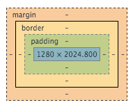

Posted on January 16, 2016
What are the differences between margin, border, and padding?
Margin refers to the space between tag elements. This space would be similar to the casing and screen protector on your phone; you use a case to protect the phone from other elements, but still consider it part of the phone when you go and pick it up.
Border refers to the space that goes around the content and padding. In the above analogy, it would be the phone.
Padding refers to the space around the content; that is the information of interest. Using the phone analogy, this would mean the motherboard and other peripherals that make the connections for the phone. The content would then be the software that runs the phone.
To illustrate this, take a look at the image below that shows the layers of the box model. Another way of thinking about this is like an onion; each layer can be different in thickness and it separates one layer from another.
